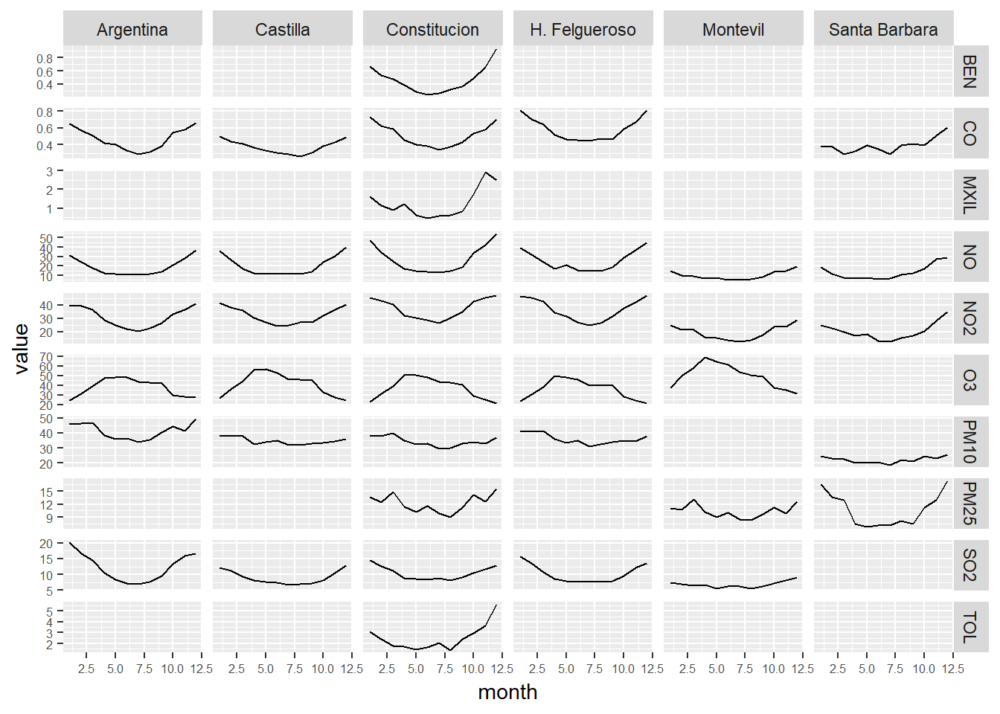

9 Data Exploration PM10 Constitucion Station
We create the dataset pm10 with PM10 values from the Constitución Station and we execute a summary
pm10 <- air_data_3 %>% filter(station_alias == 'Constituci?n') %>%
select(date_time_utc, PM10)
summary(pm10)## date_time_utc PM10
## Min. :NA Min. : NA
## 1st Qu.:NA 1st Qu.: NA
## Median :NA Median : NA
## Mean :NA Mean :NaN
## 3rd Qu.:NA 3rd Qu.: NA
## Max. :NA Max. : NA25% of the values are between 44.00 and 888.00. 888.00 is a value really extreme. How many extreme values (outliers) do we have in this series? We plot all the values to visualise this:
ggplot(pm10, aes(x = date_time_utc, y = PM10)) +
geom_point(alpha = 0.1) We have very few values greater than 250. So, it doesn’t seem we have a problem with the outliers (Pending: A PM10 level of 880 is something possible or is it likely to be a monitoring error?).
We have very few values greater than 250. So, it doesn’t seem we have a problem with the outliers (Pending: A PM10 level of 880 is something possible or is it likely to be a monitoring error?).
Daily averages
We create a new dataset with the PM10 daily averages and we plot them in a new graphic. We add a trend line too. There is a clear downward trend in the measurements and we have many fewer extreme values during the last decade. It seems like we have two very clear “epochs” in the data, before and after the year 2008.
pm10_day_avg <- pm10 %>% group_by(day = date(date_time_utc)) %>%
summarise(day_avg = mean(PM10, na.rm = TRUE))
ggplot(pm10_day_avg, aes(x = day, y = day_avg, , colour = day_avg)) +
geom_point(alpha = 0.5) +
geom_smooth(color = "grey", alpha = 0.2) +
scale_colour_gradientn(colours = terrain.colors(10)) +
theme(legend.position = c(0.3, 0.9),
legend.background = element_rect(colour = "transparent", fill = NA), legend.direction = "horizontal") +
labs(colour = "PM10 daily average (colour scale)", x = "Year", y = "PM10 daily average", title = "PM10 daily average - 2000-2017 evolution (Constitución Station)")
We identify a very clear trend through the years on the last graph. But, as we already saw before on the grid graphs there are other things happening at the same time.
year_const <- year_avgs_long %>% filter(station_alias == "Constitución", contaminante == 'PM10')
plot1 <- ggplot(year_const, aes(x = year, y = value)) +
geom_line()
month_const <- month_avgs_long %>% filter(station_alias == "Constitución", contaminante == 'PM10')
plot2 <- ggplot(month_const, aes(x = month, y = value)) +
geom_line()
week_day_const <- week_day_avgs_long %>% filter(station_alias == "Constitución", contaminante == 'PM10')
plot3 <- ggplot(week_day_const, aes(x = week_day, y = value)) +
geom_line()
hour_const <- hour_avgs_long %>% filter(station_alias == "Constitución", contaminante == 'PM10')
plot4 <- ggplot(hour_const, aes(x = hour, y = value)) +
geom_line()
grid.arrange(plot1, plot2, plot3, plot4, ncol = 2)